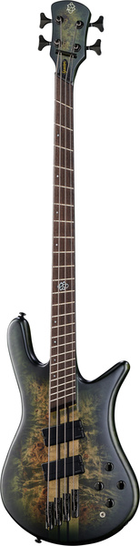

Spector NS Dimension MS 4

Electric Bass
Body: Ash
Top: Poplar burl
5-Piece through-neck: Wenge / maple
Fretboard: Wenge
Multiscale scale: 864 - 914 mm (34"-36")
Fretboard radius: 406 mm (16")
Nut width: 41 mm (1.63")
Brass nut
24 Frets
Luminlay side dots
Pickups: 2 Fishman Fluence Humbuckers
Fishman Fluence preamp
Black hardware
Colour: Moss